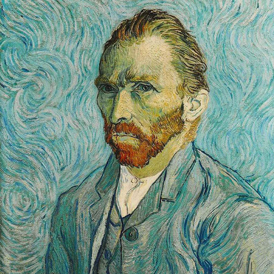
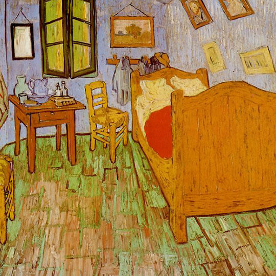
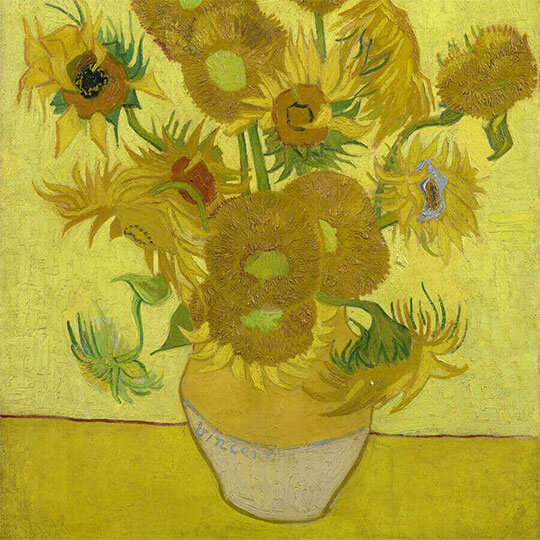
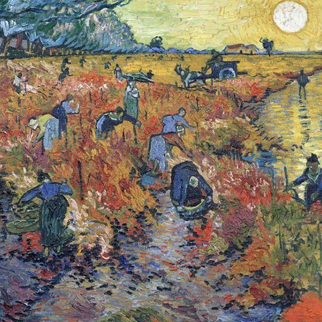
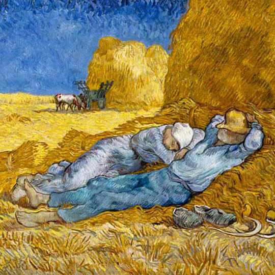
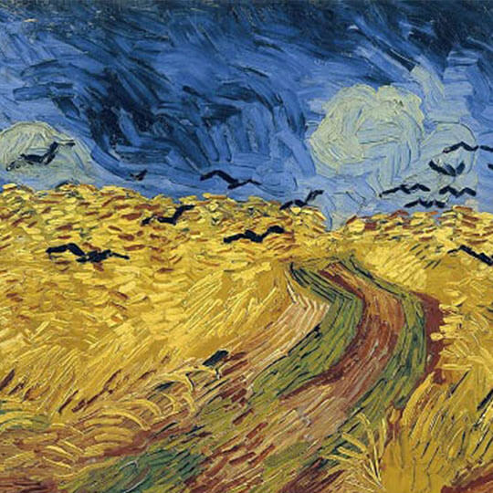

TensorFlow Fast Style Transfer Example






The painting style of
Pick Image
Predict
Load Time
1st Inference Time
Median Time (101 runs)
Average Time (101 runs)
Max Time
Min Time
Inference times
Aggregated Kernel
Type
Time(ms)
Individual Kernel
Type
Time(ms)
Inputs
Output
Extra Info